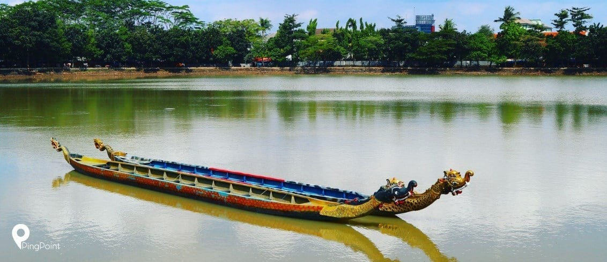

Sejarah
Jakarta, ibu kota Indonesia, memiliki sejarah panjang yang dimulai dari abad ke-4 ketika dikenal sebagai Sunda Kelapa, pelabuhan penting Kerajaan Sunda.
Pada abad ke-16, wilayah ini menjadi pusat perdagangan internasional yang ramai, terutama bagi pedagang dari India, Cina, dan Arab.
Pada tahun 1527, Fatahillah, panglima Kerajaan Demak, menaklukkan Sunda Kelapa dan mengganti namanya menjadi Jayakarta.
Pada awal abad ke-17, Belanda mendirikan VOC (Vereenigde Oostindische Compagnie) dan mulai memperluas pengaruhnya di Nusantara.
Pada tahun 1619, Belanda merebut Jayakarta dan mendirikan kota baru bernama Batavia, yang
kemudian berkembang menjadi pusat administrasi dan perdagangan kolonial Belanda di Hindia Timur.
Batavia dikenal dengan tata kota yang tertata, namun sering mengalami masalah kesehatan akibat sanitasi buruk.
Selama Perang Dunia II, Jepang menduduki Indonesia dan mengganti nama Batavia menjadi Jakarta pada 1942.
Setelah Jepang kalah dalam perang, proklamasi kemerdekaan Indonesia dikumandangkan pada 17 Agustus 1945 oleh Soekarno dan Hatta.
Jakarta menjadi ibu kota Republik Indonesia yang baru merdeka dan terus berkembang pesat sebagai pusat pemerintahan, ekonomi, dan budaya.
Geografis
Jakarta terletak di pesisir barat laut Pulau Jawa, berbatasan dengan Laut Jawa di utara dan Provinsi Banten serta Jawa Barat di selatan dan barat.
Kota ini memiliki topografi datar dengan sebagian wilayahnya berada di bawah permukaan laut, membuatnya rentan terhadap banjir, terutama saat musim hujan.
Sungai-sungai utama yang mengalir melalui Jakarta, seperti Sungai Ciliwung, sering meluap dan menyebabkan banjir di wilayah perkotaan.
Kota Jakarta memiliki luas sekitar 661,5 km² dan terdiri dari lima wilayah administratif: Jakarta Pusat, Jakarta Utara, Jakarta Timur, Jakarta Selatan, dan Jakarta Barat, serta Kepulauan Seribu yang merupakan gugusan pulau di Laut Jawa.
Sebagai pusat politik, ekonomi, dan budaya Indonesia, Jakarta memiliki kepadatan penduduk yang sangat tinggi dengan berbagai infrastruktur modern, namun menghadapi tantangan lingkungan seperti polusi udara dan penurunan permukaan tanah.
Pemerintahan
Jakarta adalah Daerah Khusus Ibukota (DKI) yang memiliki status setingkat provinsi di Indonesia. Pemerintahan Jakarta dipimpin oleh seorang Gubernur yang dibantu oleh Wakil Gubernur, dan dipilih langsung oleh rakyat melalui pemilihan umum.
Uniknya, Jakarta juga memiliki Dewan Perwakilan Rakyat Daerah (DPRD) yang berfungsi sebagai lembaga legislatif untuk menetapkan kebijakan daerah bersama eksekutif. Gubernur bertanggung jawab atas kebijakan pemerintahan, pembangunan, dan pelayanan publik di Jakarta.
Setiap kota dipimpin oleh seorang wali kota yang diangkat oleh Gubernur, namun wali kota dan bupati di Jakarta tidak dipilih langsung oleh rakyat seperti di provinsi lain. Pemerintahan Jakarta memiliki otonomi khusus, sehingga peraturan dan kebijakan daerah dapat berbeda dari provinsi lain di Indonesia.
Wisata
Allianz Ecopark Ancol

Ecopark Ancol merupakan kawasan yang jadi sarana rekreasi edutainment dan adventure. Ada empat zona di ecopark ini, yaitu Eco Care, Eco Nature, Eco Art, dan Eco Energy.
Di sini kamu bisa mengeksplor botani sambil bermain, sampai belajar soal pemanfaatan energi yang tepat. Selain itu, juga ada banyak wahana yang bisa kamu mainkan seperti sepeda air bebek.
Setu Babakan

Bersantai di pinggir danau sambil belajar budaya Betawi? Bisa banget kamu lakuin di Setu Babakan! Jadi wisata Jakarta favorit, di sini kamu bisa berwisata budaya di Perkampungan Budaya Betawi.
Kamu juga bisa wisata agro dan main wahana-wahana air yang seru di wisata air.
Taman Margasatwa Ragunan
Taman Margasatwa Ragunan jadi pilihan favorit warga Jakarta untuk mengajak anak atau sanak keluarga liburan karena jaraknya dekat dan murah.
Di sini kamu bisa eksplor berbagai tempat menarik seperti Pusat Primata Schmutzer, Taman Satwa Anak, sampai menonton Pentas Satwa.